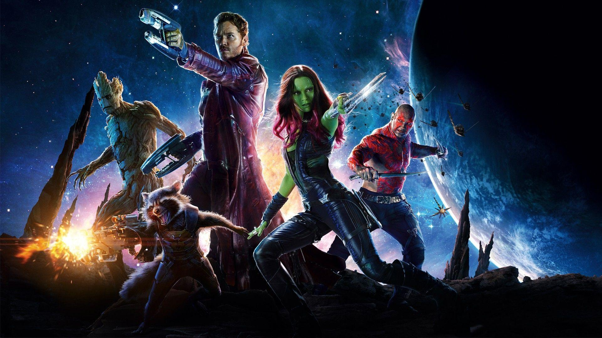
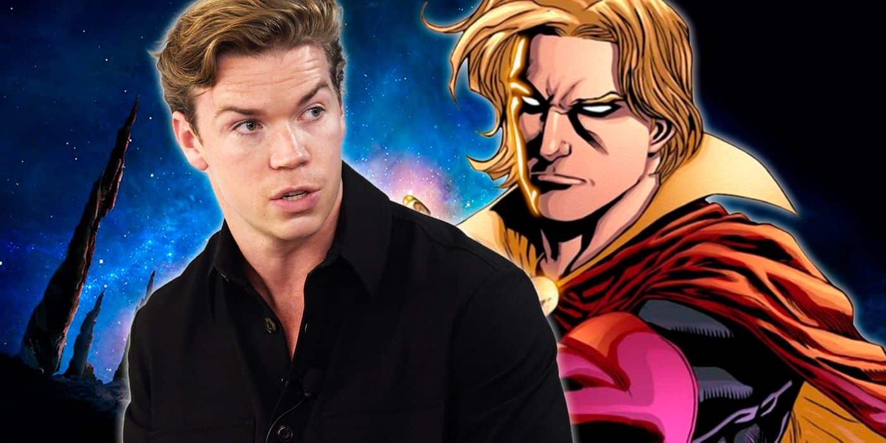
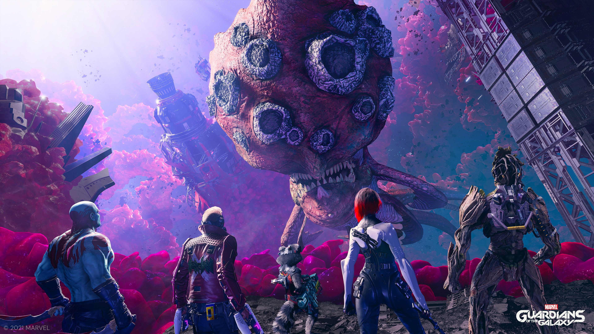
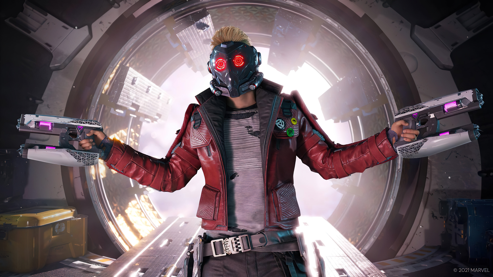
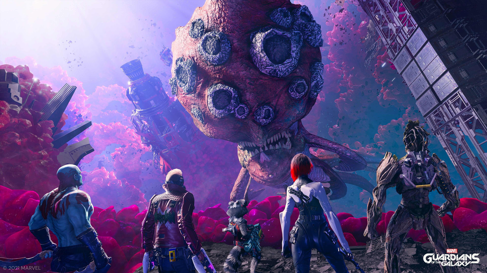
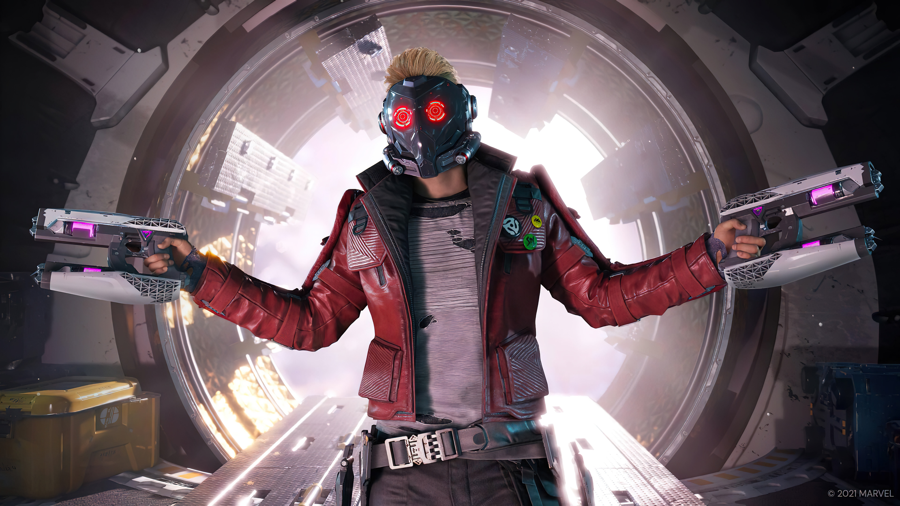

Guardians of the Galaxy vol 3
Tredje Guardians filmen släpps 2023, allt vi vet än så länge!
Guardians of the Galaxy vol 3 (GOTG 3) är James Gunns tredje GOTG film som kommer avsluta trilogin för dessa karaktärer. Vi vet inte om det är sista gången vi ser dessa karaktärer eller om de kommer att fortsätta i sina roller som the Guardians of The Galaxy. Ryktet säger att Dave Bautista kommer att spela Drax för sista gången och sedan så vill han gå vidare. Men i nuläget vet vi inte hur det kommer se ut. Han kanske får ett nytt kontrakt som han inte kan tacka nej till!
Vi har även fått bekräftat att Adam Warlock från serietidningarna kommer att vara med i GOTG 3 och enligt mig är han en väldigt interessant karaktär! Vill helst inte gå in på spoilers om hans backstory och vem han är för det kommer förmodligen att förklaras i filmen 2023, men är du intresserad av att veta mer om denna anti-hero så kan du läsa mer om honom här! Skådespelaren som kommer att spela Warlock är Will Poulter som har varit med i filmer som We're The Millers, Detroit, The Maze Runner och Narnia
Vi tror att denna filmen kommer vara väldigt bra, men det beror även på att jag är ett stort fan av Guardians of The Galaxy och Marvel. Tycker Warlock är en väldigt intressant karaktär och kommer bli kul att få se honom i film för första gången! Är man intresserad av gaming så finns även ett spel om Guardians of The Galaxy som är gjort av Eidos-Montréal och publicerat av Square Enix, vilket jag rekomenderar starkt då jag tycker spelet är bättre än filmerna! Länken till spelet på datorn hittar du här
 



VI tror att Guardians of The Galaxy vol 3 kommer bli en riktigt bra film och jag ser fram emot att se den på bio när den kommer ut!